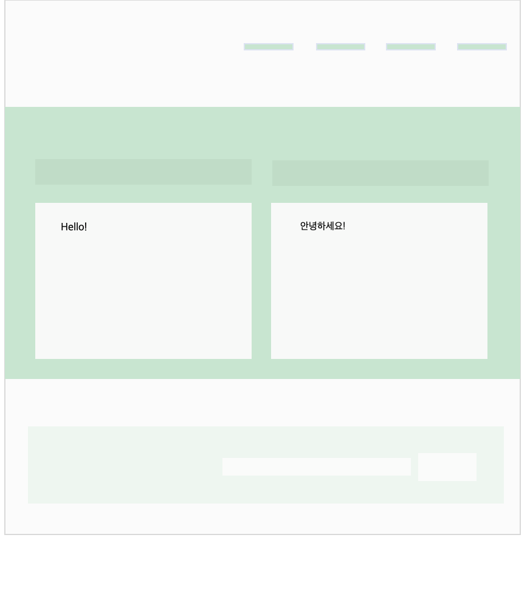
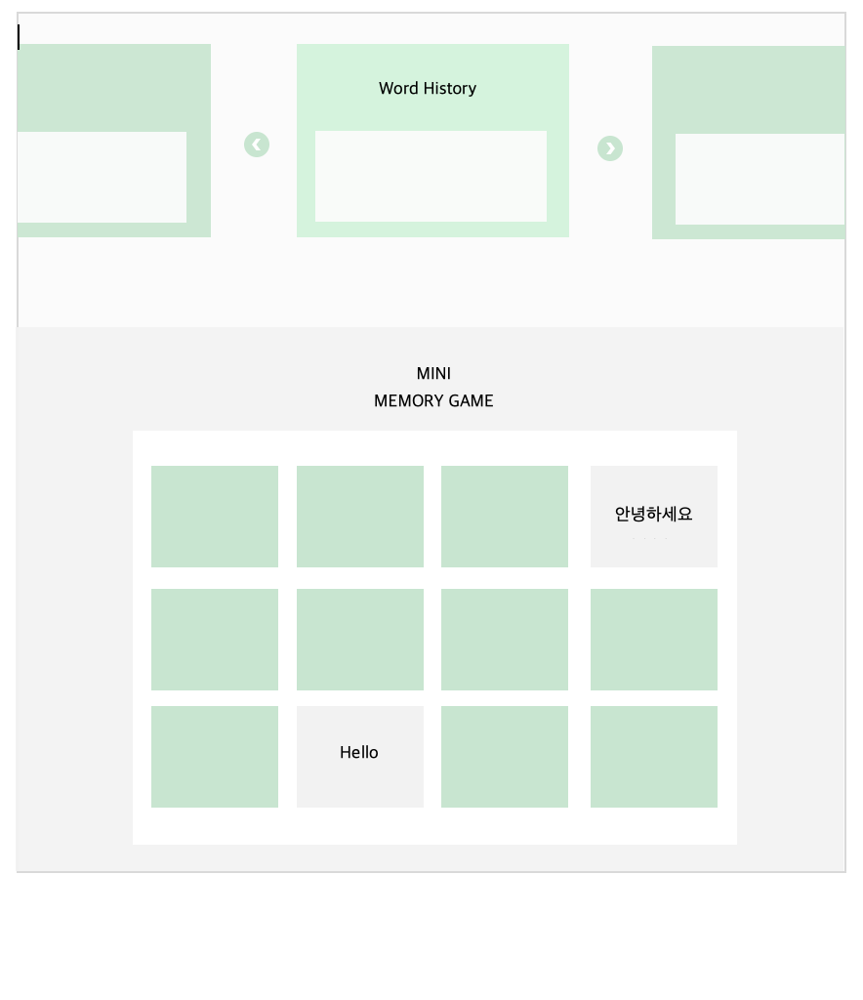

Overview
Our SimpleTranslator web application aims to break down language barriers with text translation software. This application will have a feature that enhances user engagement and aids memory retention. We hope to provide a seamless translation between user-specified languages, catering to a wide array of linguistic needs. We will have a feature that saves every translation made by the user, creating a personalized and accessible record of their learning journey. After every 12 translations of single words or phrases, users will be encouraged to participate in a memory game that draws directly from the translation history. This integration ensures that the vocabulary and phrases used in the game is relevant and tailored to the user's recent learning activities. We include an option to disable this feature, although we highly encourage users to explore this unique learning opportunity. By combining the utility of a translation tool with the engaging experience of a language learning game, SimpleTranslator is aimed to make language acquisition more enjoyable for everyone.
Application Parts
The Translator component serves as the heart of SimpleTranslator, facilitating seamless translation between languages. Leveraging a robust translation API, this feature prompts users to specify the original language and the target language, empowering them to input words or phrases for translation. By streamlining the translation process, users can effortlessly communicate across linguistic barriers, enhancing accessibility and fostering global communication. The Translator epitomizes the core functionality of SimpleTranslator, providing users with a reliable tool for linguistic exchange and cross-cultural interaction.
User History plays a pivotal role in enhancing the user experience of SimpleTranslator by enabling users to revisit frequently translated phrases. This feature not only serves as a repository of past translations but also fuels the dataset utilized in the Memory Game. By offering users easy access to their translation history, SimpleTranslator promotes efficiency and convenience, allowing users to swiftly retrieve and reuse previously translated content. Additionally, the integration of User History enriches the Memory Game experience by leveraging past translations to create engaging memory challenges, thus contributing to both usability and entertainment within the application.
The Memory Game feature within SimpleTranslator is designed to enhance memory retention while providing an enjoyable and interactive learning experience. Utilizing the last 12 words or short phrases from the User History, this game prompts users to match translations with their corresponding words or phrases. By presenting translations in a playful and gamified manner, SimpleTranslator promotes active engagement and cognitive reinforcement, making language learning both effective and entertaining. The Memory Game not only serves as a valuable educational tool but also underscores SimpleTranslator's commitment to user engagement and continuous improvement.
Data Requirements
In today's globalized world, language barriers can impede communication and cross-cultural understanding. SimpleTranslator offers a solution, providing a versatile web app that not only bridges these gaps but also enhances learning through interactive features. The application relies on four main data types: User Data, Translation Data, History Data, and Game Data, each contributing to its functionality and user experience.
User Data is central to SimpleTranslator's personalized approach. It includes preferences like chosen languages and interactive feature settings, allowing the app to tailor its operations to individual needs and learning goals. Users can select preferred languages for translation and enable or disable interactive features like the memory game, catering to their unique preferences for learning experiences.
Translation Data consists of words and phrases entered by users for translation, along with their translations and frequency tracking. This data helps refine algorithms, ensuring presented vocabulary aligns with recent learning activities. SimpleTranslator adapts recommendations based on translation patterns, enhancing relevance and effectiveness.
History Data maintains a log of past translations, offering users a convenient reference for learning and communication. It also serves as content for the memory game, facilitating review and progress tracking. Well-managed history data enriches the learning journey by providing easy access to resources.
Game Data tracks user performance in the memory game, encouraging continuous improvement in memory recall. By gamifying the learning process, SimpleTranslator motivates users to engage actively with language content, reinforcing vocabulary retention and making learning enjoyable.
In conclusion, SimpleTranslator utilizes User Data, Translation Data, History Data, and Game Data to deliver a personalized and enriching language learning experience. By tailoring translations, leveraging past interactions, and gamifying learning, the app empowers users to overcome language barriers and expand linguistic proficiency. Through these data types, SimpleTranslator emerges as a versatile tool that not only facilitates translations but also fosters a deeper understanding of diverse languages and cultures.
Wire Frames
 The Simple Translator wireframes are meticulously crafted to offer users a seamless and enjoyable language-learning experience. Our primary goal is to create an application that is not only easy to use, but also intuitive and friendly; catering to users of all levels of language proficiency.
At the forefront of the wireframes is the homepage, serving as the gateway to a world of linguistic exploration. Here, users will find a robust word and phrase translator capable of handling a diverse array of languages, including English, Korean, Chinese, and more.
Beyond translation, the Simple Translator offers additional features designed to enhance the learning journey. Users can search for previously translated words, providing quick access to commonly referenced vocabulary. Furthermore, the application maintains a comprehensive archive of past translations conducted by the user, allowing for easy review and reinforcement of learned material.
Incorporating gamification elements, the Simple Translator introduces a mini-memory game that utilizes learned words. By engaging in this interactive activity, users can reinforce their vocabulary retention while enjoying a fun and immersive learning experience.
Overall, the Simple Translator wireframes embody our commitment to providing a user-centric platform that prioritizes accessibility, ease of use, and effective language acquisition. Through thoughtful design and innovative features, we aim to empower users on their journey towards mastering new languages and unlocking opportunities for global communication and understanding.
Real World Connection
In today's society, overcoming language barriers is essential for accessing information and seizing opportunities. SimpleTranslator serves as a crucial tool in this endeavor by offering instant translation and interactive language learning experiences.
Language barriers pose significant obstacles to individuals seeking information, education, and employment opportunities, particularly for refugees and immigrants navigating new environments. Traditional language learning methods often prove time-consuming and incongruent with learners' goals. SimpleTranslator addresses these challenges by providing immediate solutions through its web-based platform. Not limited to mere text translation, it also emphasizes understanding nuances and idiomatic expressions, enriching communication.
Powered by a translation API, SimpleTranslator facilitates real-time translation across multiple languages, aiding individuals in immediate comprehension and communication. This feature is invaluable for newcomers adapting to new linguistic landscapes. Through interactive features like memory games, users actively participate in their language learning journey, enhancing both enjoyment and effectiveness. By seamlessly integrating translation services with engaging learning experiences, SimpleTranslator broadens horizons for users, enabling access to previously inaccessible educational materials and empowering businesses to explore new markets respectfully.
SimpleTranslator amalgamates instant translation with interactive language learning, effectively breaking down language barriers for individuals from diverse backgrounds. This web application not only enables immediate access across multiple languages but also serves as a practical tool to navigate the demands of our globalized world.
Integrative Experience
This integrative experience project represents the culmination of our computer science education at UMass. Within the past few years, we have gone from writing basic functions to developing full-scale scripts and applications. We have learned version control tools such as git, how to structure our program, how we can make a program store and display things, and through trial and error, we have learned how to format our program to make it accessible for others to read and change. The scope of our current projects is so large that each function of our program is its own prolonged activity. This, of course, requires that we collaborate if we want to get anything meaningful done.
Although it might not take ten hands to change a lightbulb, it may require that many to write an application. From dealing with unreadable code to testing edge cases in a peer's program, we have gotten better at both receiving help and providing it. We can now clearly structure our programs and provide meaningful names to components to make it easier for our partners to know what is going on so that they can help us. We also test, alter, and confidently use other people's code for our program because we have learned to judge the quality of code and have the ability to know exactly what it will do.
Overall, collaborating on a project is nothing new to us. Thanks to our education, we have been doing it for years now. The only difference is that we can make larger and more impactful programs that even impress us when writing them.